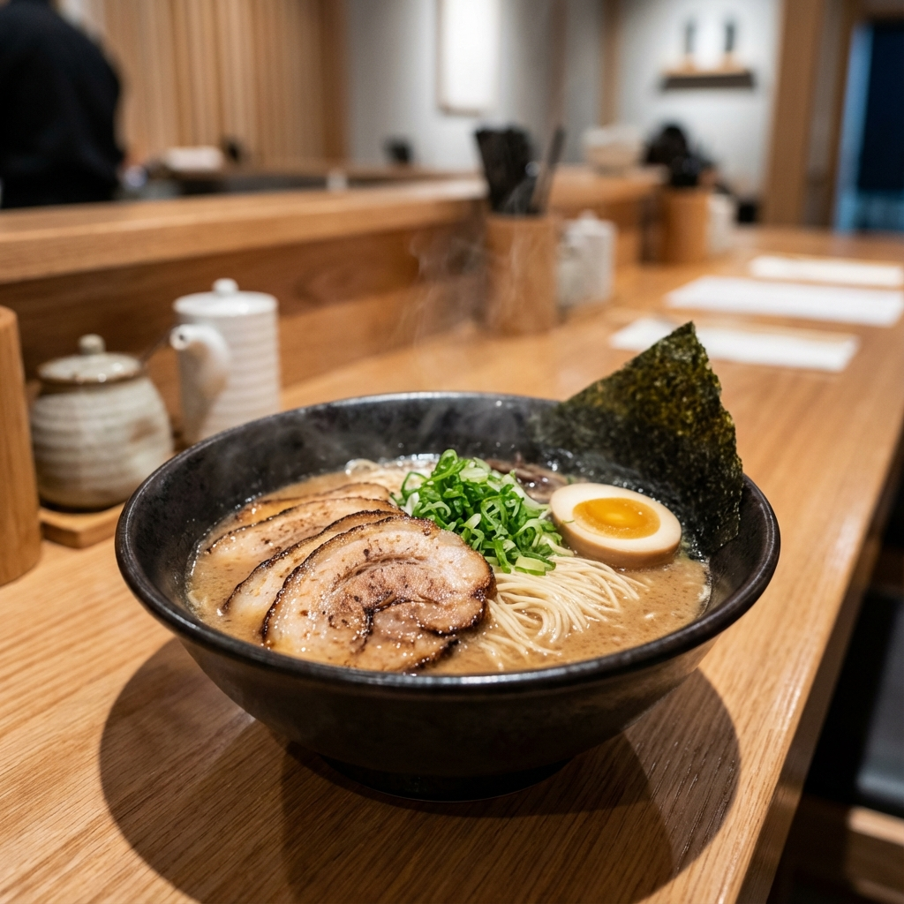
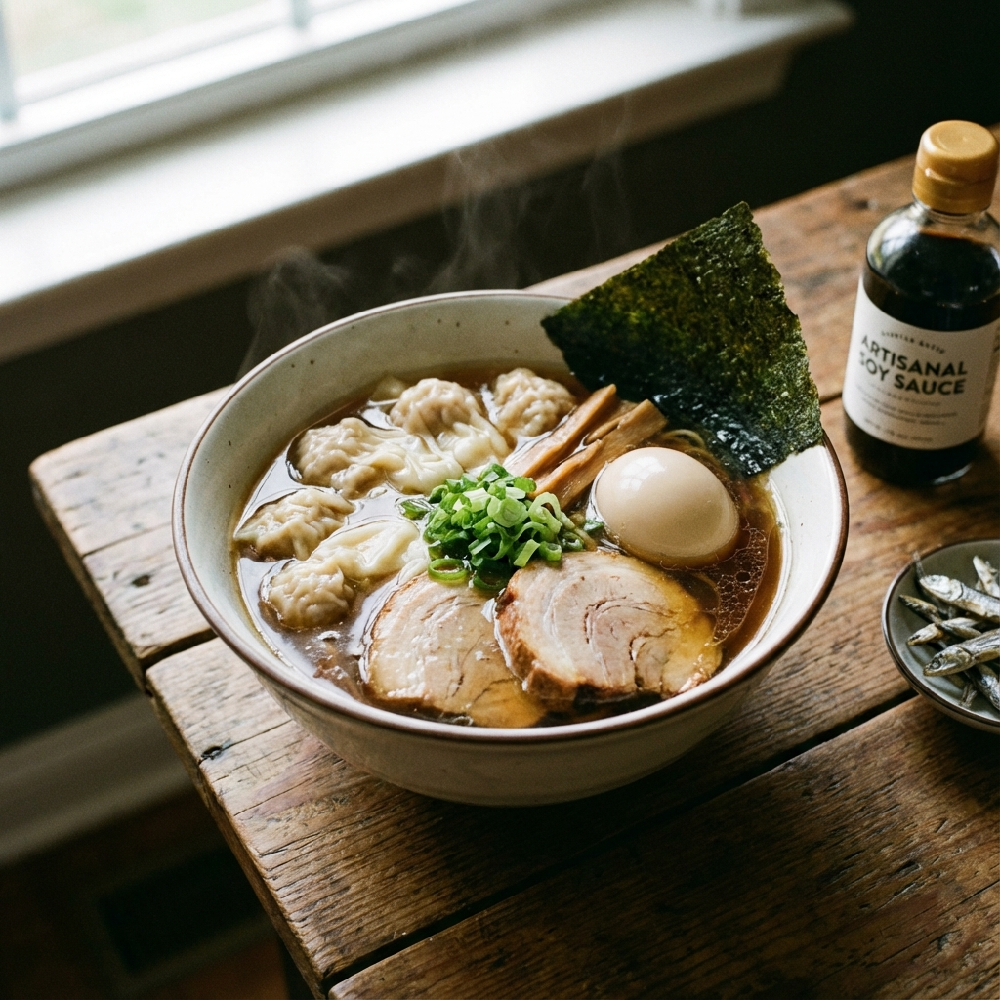

 ② ラーメン飛粋（武蔵新田） 場所（住所） 東京都大田区矢口1丁目16-24 特徴 芳醇な醤油豚骨スープと、こだわりの燻製モモ肉・とろとろバラ肉チャーシューが絶品。女性にも大人気の上質な一杯。 公式サイトへ
 ③ 奈つやの中華そば（下丸子） 場所（住所） 東京都大田区下丸子4-4-8 特徴 TRY新店大賞総合1位受賞。煮干しの旨味が詰まったスープと、自家製のもちもち雲呑（ワンタン）が自慢。 紹介サイトへ